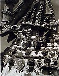

|
Large Than Life:
The Terra Cotta Sculptures of India
Article by Ron du Bois
Massive terracotta horses have been built by Tamil villagers in
south India for thousands of years. Stephen Inglis states that "technically
they are the most ambitious achievements in clay found in India
and by any survey probably the largest hollow clay images to be
created anywhere" (1).

The methods used to construct and to fire images nine to fifteen
feet or more in height are unique in ceramic history and of unusual
interest to clay specialists. They differ dramatically from the
images of horses and soldiers recently excavated in China, in that
they are larger than life-size and fired in situ. Not only is the
size impressive, but the proportions and embellishment are superb.
These works are created by a caste of hereditary potter/priests
who are products and heirs of an ancient tradition in which clay
and religion are inseparably linked.

Yet because the images are built in remote village shrines they
have been virtually ignored by scholars. As Inglis observes, "visitors
to Tamil Nadu may catch a glimpse of such images from the window
of a bus or train yet an interest once aroused is difficult to pursue.
Tamil
people of the cities know little of them and for the ordinary village
people, work on such images involves skills and a sacred ritual
of which they have little knowledge. The work is almost never seen
in big towns or cities, sold in fairs, or otherwise displayed. Although
some attention has been given by scholars to the religious complex
in which they playa part, information about massive images and the
craftsmen who build them is not to be found in the literature on
south India" (2).
In
May, 1980, as an Indo-American Fellow, I was able to observe at
first hand, in remote and abandoned village shrines, ancient examples
of these massive terracotta horses "with fiercely noble heads
standing ready to carry god or demon" (3). As I
looked at them, numerous questions came to mind: How old were they?
Who made them? What was their purpose? Were they still being made?
How could such huge clay images be fired? How could passages of
clay varying in thickness from two to sixteen inches be dried and
fired without mishap of any kind?
The answers to these questions would shed new light on the methods
used in the past by the Etruscans, the Chinese, and pre-Columbian
peoples to create such larger-than-life terracotta images. The
craftsmen who made them clearly used methods of construction and
firing outside the spectrum of Western ceramic skills and processes.
Few, if any clay specialists in the Western world would attempt
to build and fire on-site ceramic sculpture of such monumental scale.
Through the unfailing support of Ray Meeker and Deborah Smith of
the Golden Bridge Pottery in Pondicherry, I found some important
answers. Former students of Susan Peterson, they are the only American
potters successfully producing hand-thrown stoneware in India at
present.
Their plan of organization made the documentation possible. Intrigued
with the projected filming of the construction of an Aiyanar horse,
they offered me the use of their recently purchased jeep to search
for Aiyanar shrines and potters. The three of us, together with
Ray's assistant, Ratchagar, to serve as translator, set out on a
four-wheel drive field trip.
On a single day's outing, we sighted five Aiyanar shrines in the
outskirts of Chidambaram. Each of the sites held one or more terracotta horses, each ten to twelve feet high constructed within the
last one hundred years. The surface decoration, in most cases, had
weathered away and the patina indicated considerable age. There
was nothing to indicate the date or the names of either the potters
or donors. Such facts were never recorded.
Were such horses still being built? Thanks to my friends' fluency
in Tamil we soon found a pottery community reputed to have horse-
building skills in the village of Puthur, sixteen kilometers from
Chidambaram. When we found the earth and thatch dwellings of the
potters, we discovered an Aiyanar shrine nearby complete with a
huge standing terracotta horse, which the potters claimed was more
than one hundred years old. Near the older form was a more recent
horse built of cement, a material that has now almost completely
replaced clay as the medium for shaping ritual images. To the west
stood a large cement image of Aiyanar and to the south, a shrine
housed a much smaller image flanked by two consorts. The shrine
is in active use. Each evening some forty villagers worship there,
the women touching their foreheads to the ground and the men prostrating
themselves completely.
The indigenous religious system, involving the belief in a male
deity, at once hero, protector, companion, and councilor, is Dravidian.
It predates by centuries the Aryan introduction of Hinduism with
its complex pantheon of deities in the second millennium B.C. During
the Middle Ages, in order to upgrade and legitimize Aiyanar through
association with mainline Hinduism, devotees evolved the story of
his birth as a son of Shiva and Vishnu (in the form of a beautiful
woman). Aiyanar helps on many important occasions in life -to choose
a bride or groom, to cure sickness, or to punish a wrongdoer. He
holds a metal sword in his hand on which devotees thrust paper messages
stating their various problems. Often the solutions are revealed
in dreams.
V. Mutha Swamy, member of the five-man
team which constructs the massive ritual horses

We learned that the last large Aiyanar horse was commissioned
more than twenty years ago. But the potters assured us they still
knew how to build one. Would they do it? Would they accept a commission
from a non-Hindu - a foreigner? I was impressed with the potters
and had a genuine sympathy and liking for Aiyanar and his shrines.
Unlike Hindu temples, his shrines were always located in secluded
country areas in which trees were a necessary and auspicious component.
They were restrained-the sculptural quality of the clay or cement
images was stable and impressive. Perhaps the potters were moved
by my positive attitude and interest in Aiyanar; at any rate, they
decided to accept the commission. They agreed to build a horse nine
feet high in twenty days; it was to be situated next to the existing
horses. They quoted a price of 500 rupees. After haggling, they
reduced the figure to 400 rupees- ($48.00) - a good price by Indian
standards but by Western standards extremely low when one considers
that four or five men would work for twenty days to complete the
commission.
Day One:
They knew their business. On Monday, May 26, 1980, a puja (ritual)
was held to ensure the success of the project. To consecrate the
ground on which the horse was to be built, the potters encircled
the area using the blood streaming from the neck of a decapitated
rooster. Coconut halves were placed to each side of the area.
Liquor, an essential ritualistic ingredient, was present although
Tamil Nadu is a "dry" state. Technically, liquor is
illegal but this was "home brew," which escaped official
scrutiny. Food offerings to Aiyanar completed the ritual. Secure
in the assurance that Aiyanar was now companion to the project,
the potters began construction.
The preparation of the clay had taken place the day before. A
circular earth pit about four feet in diameter served as a mixing
trough. One part sedimentary earthenware is mixed with one part
earthenware topsoil. Although fine-grained, it contains silt.
To this enough water is added to produce a medium-viscosity slurry.
The potters knew this clay would fail as a medium for building
large sculpture. Large quantities of non-plastic ingredients are
essential to prevent shrinkage and hence cracking, as well as
to permit thick passages of clay. The non-plastic ingredients
consist of three parts rice hulls and approximately one part (by
volume) of three-to-four-inch lengths of rice straw. The potters
added this to the earthenware slurry and mixed it by foot to produce
a medium soft mixture possessing all the qualities of a "castable."

Large coils of this material were used to form rings around previously
inscribed twelve-inch circles on the ground marking the four "hoofs"
of the horse. A second coil of clay joined to the initial ring
extended the diameter to sixteen inches. Four of these clay rings
were formed to establish the four "hoofs" of the horse's
legs. This accomplished, a potter, using a metal excavating tool,
dug holes approximately twelve inches deep inside each ring of
clay. A potter set a wooden pole about six feet high inside one
hole and held it while a colleague quickly filled the entire hole
with clay thus supporting the pole in a vertical position. In
a similar fashion, vertical poles were set in the three remaining
holes. Each wooden pole, therefore, was supported by a solid mass
of clay mixture about sixteen inches across and twelve inches
deep. Without the use of rice hulls and straw such passages would
shrink and crack.
These ingredients are the major part of the mixture by volume
and are essential to this type of monumental clay construction.
The last part to be constructed was a clay base for the central
rectangular support, 24" x 24". This completed the first
day's work. Nothing further could be done until the moist clay
mixture stiffened.
The potters spent their time in the afternoon preparing ropes
made of rice straw. Wrapped around the wooden uprights these ropes
create a compressible internal support system for the application
of about a four-inch wall of clay thereby eliminating any possibility
of the clay cracking as it dries and contracts.

Day Two:
On the morning of the second day of construction the potters completed
the task of winding the straw ropes around the four wooden uprights.
They then applied a four-inch wall of clay so that four large
tubes about 40 inches tall were formed, each serving as a metaphorical
leg. Next, four vertical uprights were fixed at the inside comer
of the base of the central rectangular support previously completed.
Straw ropes were wound around them to create an armature for a
thick application of clay. The potters worked surely and quickly
in spite of a 112 degree Fahrenheit temperature. Descendants of
generations of clay craftsmen, they have learned the skills from
childhood and are concerned only with the work at hand, In the
afternoon they completed the front and rear legs and the central
rectangular support. The front legs now stood as a single unit
44 inches high, 38 inches wide, and 17 inches across, measured
at the top center. By fixing wooden supports to the wooden uprights,
the potters created a horizontal passage of clay that bridged
the two front and rear legs. The clay mixture was laid over and
under these supports to create a level horizontal surface. This
completed, nothing more could be done until the horizontal passages
of clay stiffened.
Day Three:
On the morning of the third day, additional wood supports were
placed horizontally to connect the front legs to the central support
and. then to the rear legs' unit. The potters molded the horse's
under-belly by laying "gobs" of the clay directly on
the wood supports (both above and underneath); this process produced
a slab four inches thick, seven feet, ten inches long, and thirty-four
inches wide! Such a feat was possible only because of the wooden
internal support system.

After the burning rays of the sun had stiffened the slab, the
potters next added coils of clay to form the curve of the belly,
a process which added seven inches to the height. They tapered
the edge of the final coil. When the clay was stiff, the diagonal
slant provided a broader surface and hence a good join for the
next application of clay.
Day Four: In the afternoon the potters, using
thick gobs of the basic clay mixture, modeled the figure of the
guardian (or groom) of Aiyanar's horse directly on the surface
of the central support form.

Katrvil models images symbolizing Aiyanar's groom, working with
thick gobs of clay.
Right, he poses beside the completed form which took two hours
to complete.
Day Six: lengths of bamboo are placed inside
the figure to complement exterior supports.

Some of the passages were four inches thick, attesting to the
non-plastic nature of the basic clay mixture. An application of
pure clay over the coarse basic clay followed, and detailing was
done with fingers and a wooden modeling tool. The modeling skills
are of a high order and result in a figure with remarkable spring
and incipient energy.
The basic clay mixture is similar to what, in the West, is considered
to be a "castable" -a clay body suitable for bricks,
refractory linings, or kiln construction but rarely considered
as suitable for ceramic sculpture. Again, to the Western craftsman,
a kiln for firing ceramic sculpture would appear essential. As
a result he limits himself to forms that can be lifted and moved
into a kiln. The idea of firing "in situ" at the site
of construction rather than in a studio/workshop has never been
the practice. Permanent kilns, plumbing and wiring for gas, oil,
or electricity have all been part of the Western paradigm - yet
the Etruscans, pre-Columbians, Africans, and the potter-priests
of India as well all constructed temporary clay walls for on-site
firing of monumental ceramic forms.
  
 
Day Nine: The entire neck, saddle and tail
are complete.
 
Day Twelve: Moist earth carried to the
site forms the wall for 'open field' firing.


The fire is started through a firehole igniting
the layers of straw, dung and wood that surround and support the
figure.
Day Fourteen: The firing is completed within
three hours.

The potters brought the project to a conclusion with
a final puja (religious ceremony) and a "bringing to life"
of the successfully fired and decorated horse. It is hoped that
these notes and photographs will benefit Western craftsmen and serve
to enhance internationally the most impressive but little-known
skills of Indian potters.
Download a one minute video of the pre-construction
puja ceremony. Warning - this video contains footage of an animal
sacrifice that may be distressing to some viewers. Dowload
video (7 Mb, avi format).
Footnotes:
- 1-2 Stephen R. Inglis, "Night Riders: Massive Temple Figures
of Rural Tamil Nadu, in V. Vijayavenugopala (ed.) A Festschrift
for Prof. M. Shanmugam Pillai, Madurai University Press, 1980.
- 3 Stella Kramrisch, Unknown India: Ritual Art in Tribe and Village.
Philadelphia Museum of Art.
Ron du Bois, an emeritus professor of art, taught ceramics and studio
art at Oklahoma State University, USA. He was Fulbright professor
to Korea in 1973-74, where he taught ceramics at three Korean universities.
His award winning documentary, The Working Processes of the Korean
Folk Potter, was filmed at that time. In 1979-80, du Bois traveled
extensively in India as a 1979-80 Indo-American fellow to research
and document the work of Indian potters. Among other projects he
filmed the entire construction of perhaps the last massive terra-
cotta horse to be built in India. The documentary, "The Working
Processes of the Potters of India: Massive Terra-Cotta Horse Construction"
was completed under the auspices of the National Endowment for the
Humanities and deals with the subject matter of this article. In
1987, du Bois was awarded a 10 month Fulbright Senior Research Scholar
grant, African Regional Research program, to research and document
Nigerian potters. For information on his POTTERS OF THE WORLD FILM/VIDEO
SERIES contact: Ron du Bois, Professor Emeritus, http://www.angelfire.com/ok2/dubois,
612 S. Kings St., Stillwater, OK 74074, (405) 377-2524, email: duboisr@sbcglobal.net,
fax: 1-405-372-5023
More Articles
|


{kind=link}
{kind=link}
{kind=link}
{kind=link}
{kind=link}
{kind=link}
{kind=link}
{kind=link}
{kind=link}
{kind=link}
{kind=link}
{kind=link}
{kind=link}
{kind=link}
{kind=link}
{kind=link}
{kind=link}
{kind=link}
{kind=link}
{kind=link}